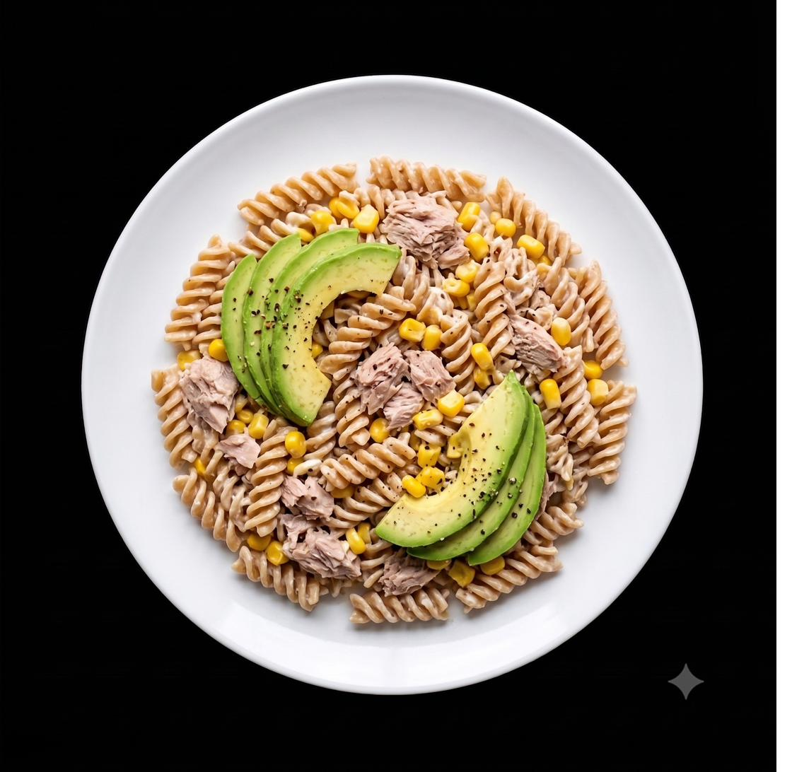

A blood sugar-friendly tuna pasta salad — wholewheat pasta kept to a modest 60g portion to manage glycemic load, with avocado providing healthy fat and fibre in place of eggs. High protein, minimal sugar, no mayo.

| Ingredient | Amount | Calories |
|---|---|---|
| Lidl Baresa 100% Durum Wholewheat Fusilli, dry weight | 60g | 205 kcal |
| Tuna in spring water, drained | 1 tin (~145g) | 130 kcal |
| Avocado, halved and stoned | 1 whole avocado | 230 kcal |
| Sweetcorn (no added sugar) | 50g | 40 kcal |
| Full-fat Greek yogurt | 2 tbsp | 30 kcal |
| Lemon, juiced | 1 lemon | — |
| Black pepper | 1 pinch | — |
Cook the fusilli in a pan of boiling water according to packet instructions, usually around 10–12 minutes until al dente. Drain and rinse briefly under cold water to stop the cooking and cool slightly.
In a large bowl, combine the cooled pasta with the tuna and sweetcorn.
Stir through the Greek yogurt and squeeze in the juice of the lemon. Season with black pepper. Mix well to coat evenly.
Slice or dice the avocado and gently fold through the pasta, or arrange on top. Serve at room temperature or chilled — eat the tuna and avocado first where possible before the pasta to further flatten the glucose curve.